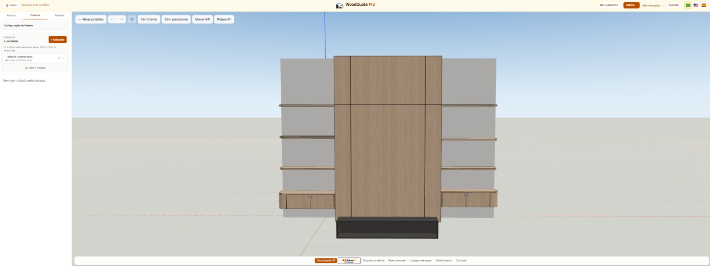
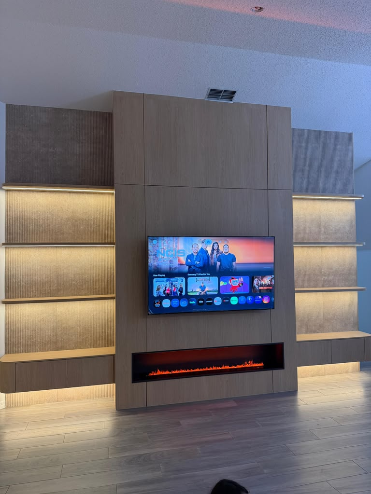
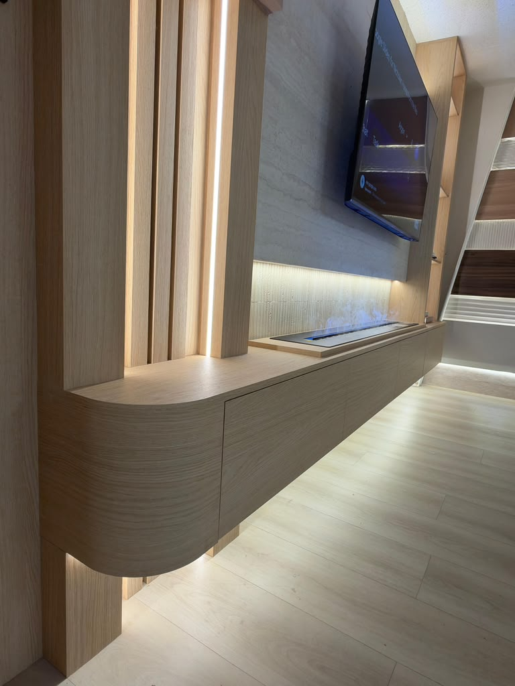
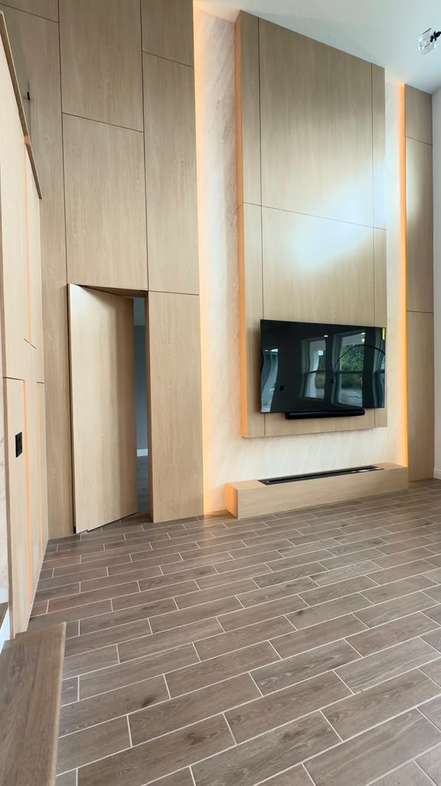
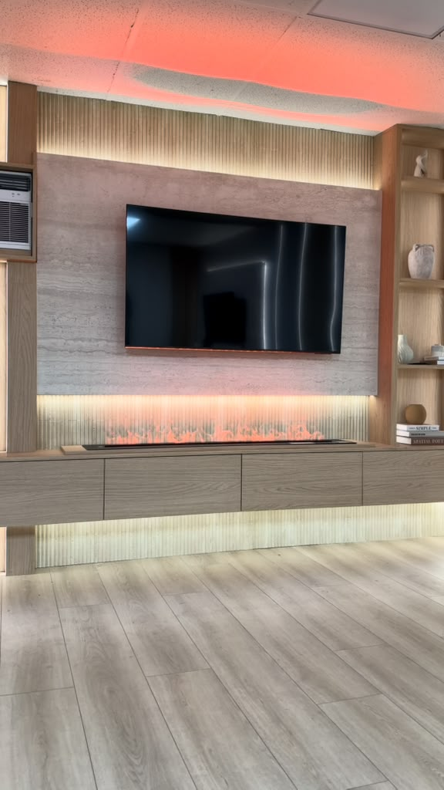

Menos contas espalhadas.
Conecte as informações do projeto e das peças para organizar a preparação da produção.
TECNOLOGIA PARA QUEM FAZ MÓVEIS
Projete móveis em 3D, organize as peças e planeje o corte em um fluxo conectado. Leve sua próxima ideia para a oficina com mais clareza em cada etapa.
10 dias grátis com todas as funções do Full, inclusive ao escolher o Basic.

Projeto 3D → Peças → Plano de corte → Produção
SUA ROTINA PODE SER DIFERENTE
Quem vive de marcenaria sabe: uma decisão no projeto acompanha a peça até a montagem.
Conecte as informações do projeto e das peças para organizar a preparação da produção.
A visualização em 3D ajuda a apresentar a ideia e conversar sobre o móvel antes de levá-lo à oficina.
Leve o planejamento de corte para dentro do fluxo, com uma visão das peças que compõem o projeto.
UM FLUXO. DO COMEÇO AO FIM.
Conheça o caminho do projeto à produção. Selecione uma etapa e veja como o WoodQuote Pro acompanha seu trabalho.
Visualize o móvel em 3D para desenvolver a ideia e apresentar o projeto com mais clareza.
Do primeiro desenho à preparação para produzir.DA TELA AO AMBIENTE
Projetos na plataforma e móveis já executados: explore ideias, volumes e detalhes.




Veja os ambientes executados e seus detalhes em vídeo.
MAIS CONTINUIDADE NA SUA ROTINA
Uma plataforma conectada faz sentido quando ajuda a levar o que foi planejado para a próxima etapa do trabalho.
Escolha o plano que acompanha o ritmo da sua produção.
ESCOLHA SEU PRÓXIMO PASSO
10 dias grátis com todas as funções do Full, inclusive ao escolher o Basic.
BASIC
Preço promocional · USD
US$ 29.99 /mês
Libera impressão, etiquetas, DXF, listagem, detalhamento e contrato. Ao usar o crédito, o projeto fica bloqueado para alterações posteriores.
FULL
Preço promocional · USD
US$ 199.00 /mês
Valores em dólares americanos. Confira as condições de cobrança e cancelamento no site principal antes de iniciar o teste.
SEU PRÓXIMO PROJETO COMEÇA AQUI
10 dias grátis com todas as funções do Full, inclusive ao escolher o Basic.
Teste grátis por 10 diasConfira os recursos, a duração do teste e as condições de assinatura antes de começar.
ANTES DO PRIMEIRO PROJETO
Para quem projeta e produz móveis: marceneiros autônomos, marcenarias e empresas de móveis planejados que querem conectar o projeto à produção.
No site principal do WoodQuote Pro. Esta página apresenta a solução e direciona você para lá.
10 dias grátis com todas as funções do Full, inclusive ao escolher o Basic.
Basic inclui 5 renders por dia e visualização do plano de corte. Full inclui todas as funções e 20 renders por dia. Veja a comparação de planos acima para conhecer as regras de créditos.
CONVERSE COM A GENTE
Fale com nossa equipe sobre os planos e encontre a opção para sua rotina.